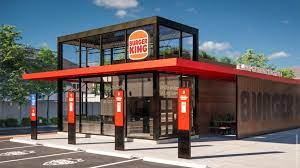
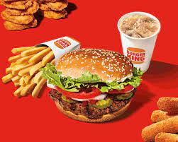

BURGER KING
Every day, more than 11 million guests visit BURGER KING® restaurants around the world. And they do so because our restaurants are known for serving high-quality, great-tasting, and affordable food. Founded in 1954, BURGER KING® is the second largest fast food hamburger chain in the world. The original HOME OF THE WHOPPER®, our commitment to premium ingredients, signature recipes, and family-friendly dining experiences is what has defined our brand for more than 50 successful years.
The very first BURGER KING® restaurant in South Africa opened its doors in May 2013. A joint venture between Western Cape-based investment company, Grand Parade Investments, and BURGER KING® Worldwide, BURGER KING® South Africa was launched in the Western Cape and continues to expand nationally.
BURGER KING South Africa plans to keep contributing to the South African economy and creating a significant number of jobs for South Africans over the years.
 